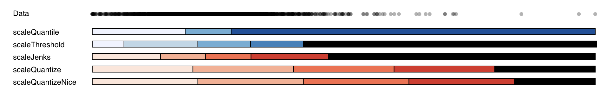
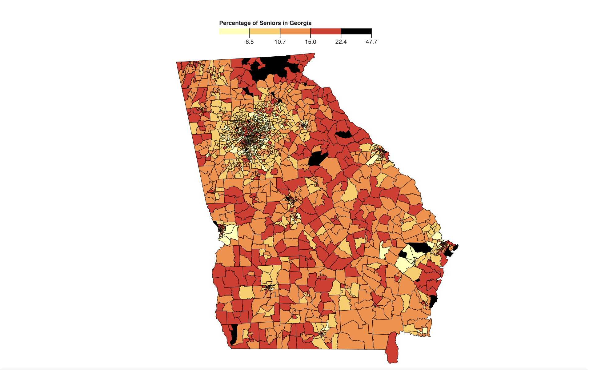
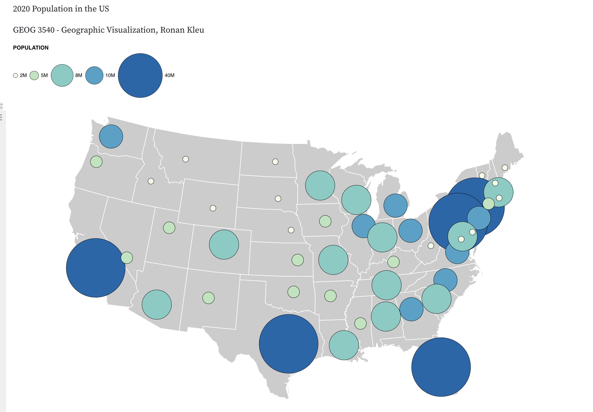
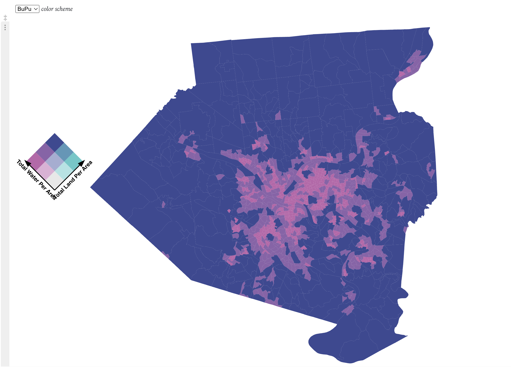
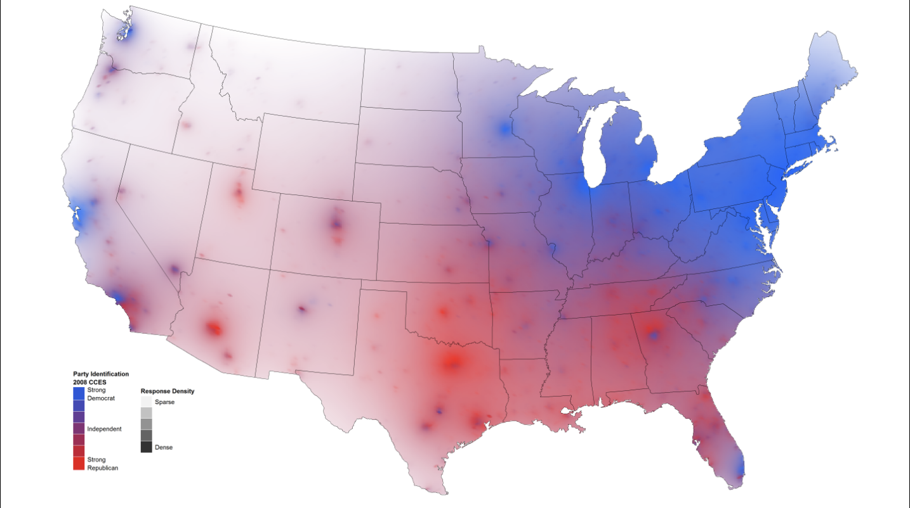

Intro
My name is Ronan Kleu and I am currently a MSBA student at the University of Iowa. The journey so far has not only taught me plenty of technical skills including Python, R, Tableau, SQL but also the value of time management and group work, all of which has prepared me for the workspace. Click here to view my resume.
Resume
View my resume here.
About
Having studied economics as my undergraduate degree, I was only exposed to technical projects in my first semester of my Business Analytics Master's programme. Some projects I have been a part of since then include:
- Creating an autoregressive model to forecast sales for an electronics store using Python.
- Analyzing the impact of each aspect of the game of golf on earnings using Tableau.
- Visualizing the amount of dog bites in NYC using different determining factors.
- Proposing a model to increase efficiency of the University of Iowa River
Geovisualization Projects
-
Classification and Colors

Assignment two is called Colors and Classification and used different classification models and colours to show the percentage of seniors in Georgia. This assignment was a stepping stone for later assignments, where actually created maps.
-
Choropleth Map

This choropleth map shows the percentage of seniors in Georgia. We can evaluate the spatial patterns. Firstly, Atlanta is not well visible due to the large amount of Census Tracts in that area. We see similar notions for Columbus, Macon, Augusta and Savannah but not as severely. It is evident is that there is no linear trend to data, the percentage of seniors varies quite a lot. What is noticeable, however, is the fact that the suburbs of Atlanta and other larger cities are dominated by a smaller percentage of senior citizens. This could be explained by the workforce and students populating the area. Furthermore, there is an outlier on the Nothern border of Georgia, where the perecntage of seniors is close to 50 percent.
-
Graduated Symbol Map

This graduated symbol mapping I created shows the population distribution in 2020. The highest population in 2020 occurs in large states such as California, Florida and Texas. Additionally, there is a population hotpot in the North-East of the United States around Maryland, DC and New York. The Midwest shows the lowest number for population, whereas the East is associated with higher number of inhabitants, most likely due to the topology of the Midwest with the prairies, aridity, and Rockies mountain range.
-
Bivariate Map

This map shows the land to water ratio in Allegheny county, PA. Spatial patterns: This map of Allegheny County which encloses Pittsburgh shows the distribution of the total amount of water and the total amount of land per area. The darkest shade shows a large amount of both, whereas lighter shades represent a predominance of either land or water. Using the purple orange as an example, the brown denotes a high ratio of both land and water, the yellowish more land, the purple more water and the whitish little of both, which won't be the case often. It's interesting to see that there is no tract where water isn't very prevalent. Upon closer inspection on Google Maps, this makes sense as there are a multitude of creeks that run through those tracts. The areas which are dominated by water around Pittsburgh are due to the convergence of the Ohio, Allegheny and Monongahela Rivers. Please note that this represents a ratio rather than the absolute area.
-
Isarithmic map

This isarithmic map is one that I found online created by David Sparks. I thought this map was interesting as it shows party affiliation among voters in the United States but on a continuous scale in an isarithmic map.
-
Contact
If you would like to get in touch, please email me at ronan-kleu@uiowa.edu.